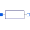

ConductorIdeal linear electrical conductor |

|
Information
This information is part of the Modelica Standard Library maintained by the Modelica Association.
The linear conductor connects the branch voltage v with the branch current i by i = v*G. The Conductance G is allowed to be positive, zero, or negative.
Parameters (5)
| useHeatPort |
Value: false Type: Boolean Description: =true, if heatPort is enabled |
|---|---|
| T |
Value: T_ref Type: Temperature (K) Description: Fixed device temperature if useHeatPort = false |
| G |
Value: Type: Conductance (S) Description: Conductance at temperature T_ref |
| T_ref |
Value: 300.15 Type: Temperature (K) Description: Reference temperature |
| alpha |
Value: 0 Type: LinearTemperatureCoefficient (¹/K) Description: Temperature coefficient of conductance (G_actual = G_ref/(1 + alpha*(T_heatPort - T_ref)) |
Connectors (3)
| p |
Type: PositivePin Description: Positive electrical pin |
|
|---|---|---|
| n |
Type: NegativePin Description: Negative electrical pin |
|
| heatPort |
Type: HeatPort_a Description: Conditional heat port |
Used in Examples (2)
|
Modelica.Electrical.Analog.Examples
Chua's circuit, ns, V, A |
|
|
Modelica.Electrical.Analog.Examples
Resonance circuits: example to demonstrate generation of FMUs (Functional Mock-up Units) |
Used in Components (4)
|
Modelica.Electrical.Analog.Examples.Utilities
Input/output block of a conductance model |
|
|
Modelica.Electrical.Analog.Lines
Lossy Transmission Line |
|
|
Modelica.Electrical.Analog.Lines.M_OLine
Multiple line segment model |
|
|
Modelica.Electrical.MultiPhase.Basic
Ideal linear electrical conductors |